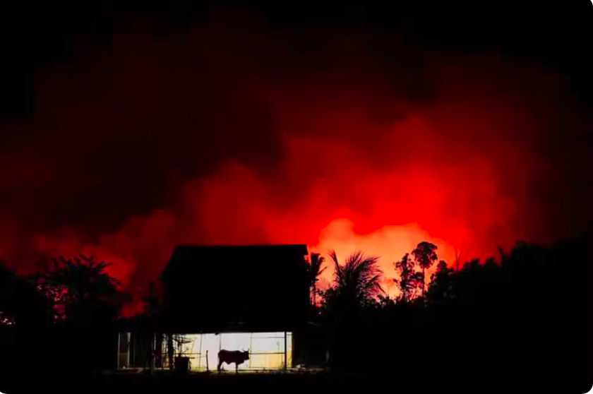

Aumento de incêndios em áreas de floresta mostra mudança de cenário na Amazônia. 'Clima tem impactado essa tendência, deixando as florestas mais inflamáveis e suscetíveis aos incêndios', diz Ane Alencar, diretora de Ciência do IPAM.
A área de floresta nativa queimada na Amazônia aumentou 132% em agosto de 2024 em relação ao mesmo mês de 2023, segundo relatório do Monitor do Fogo, do Instituto de Pesquisa Ambiental da Amazônia (Ipam) e da rede MapBiomas.
O aumento de incêndios em áreas de floresta mostra uma mudança de cenário na Amazônia, no qual o clima seco e o calor passaram a influenciar as áreas devastadas pelo fogo em uma floresta até então reconhecida por ser tipicamente úmida.
Os dados divulgados nesta quinta-feira (12) apontam que um terço da área afetada pelas chamas é composta por vegetação nativa, ou seja, áreas que não foram desmatadas e depois incendiadas para limpeza antes de plantio ou criação de gado, como é mais comum na ocupação irregular na região.